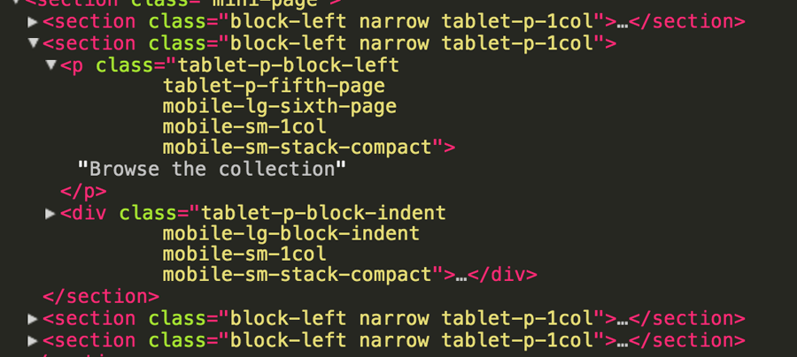

OO What??
Object Orientated Cascading Style Sheets
- Nicole Sullivan (2011)
- Fronteers (Rijksmuseum)
- Redesign NOS.nl
"There's a class for that"

Principles of OOCSS
- Seperation of Structure from Skin
- Seperation of Containers and Content
Seperation of Structure from Skin
Seperation of Containers and Content
When we use OOCSS’s class-based module building, we ensure that our styles are not dependent on any containing element. This means they can then be reused anywhere in the document, regardless of structural context.
Advantages
- Reuse of css rules (faster & smaller files)
- Maintainable
Tips
- Plan carefully!
- Avoid the descendent selector (.list li)
- HTML elements for styling (h1.title)
- Media Query modules, not pages
Misconceptions
- Preprocessors == OOCSS
- Can't use #ids
- Big projects/websites
-
Reading...
- Scalable and Modular Architecture for CSS - www.smacss.com
- OOCSS - http://oocss.org/
- inuit css - http://inuitcss.com/
- Nicole Sullivan - @stubbornella